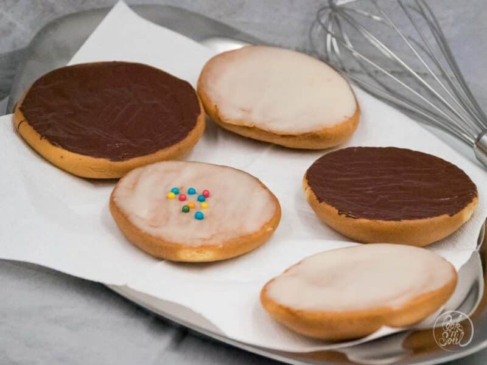

Main
Roast with Mustard Sauce |
Red Cabbage a la Oma |
Spaghetti Carbonara |
Waffels
Amerikaner - german pastry

Description:
This is one of my favorite German pastry. In Germany you can buy this at a bakery along with other pastries.
This German pastry is not a cookie. It is more comparable to the catagory of baked goods like donuts
or cinnemon rolls.
This pastry is very delicious. It is moist and sweet. Most of it's sweetness comes from the sugar glaze.
If you are looking for less sugar, you might be able to top it with a low sugar frosting instead.
Ingredients:
For the dough:
-
150 g margarine
-
125 g sugar
-
1 Pack. vanilla sugar*
-
2 eggs
-
2 Tbs. milk
-
300 g flour
-
2 Tsp. baking powder
For the glaze:
Steps:
-
Mix margarine, sugar, eggs and vanilla sugar until foamy.
-
Then add the rest of the ingredients and mix until mixed evenly.
-
Lay out cookie sheet with baking paper (not wax paper!)
-
Scoop the dough onto cookie sheet using two regular soup spoons (one to scoop, one to scrape off the dough
onto the cookie sheet as the dough will be very sticky) forming little blobs about 1-1 ½ inch in diameter.
Tip: I usually use an icecream scooper.
-
Bake at 200 °C for approx. 15-30 min. (until the bottom is golden brown).
-
Powdered Sugar Glaze: Mix Powdered Sugar with some water and cover the bottom side of the “Americans” with glaze.
Let the glaze dry.
Alternately you can also cover them with chocolate almond bark. Or chocolate glaze, by adding some cocoa powder to the
powdered sugar glaze.
*Vanilla sugar is sugar that has been mixed around in the interior of vanilla sticks. Alternately you can just use some
vanilla extract.
Enjoy!